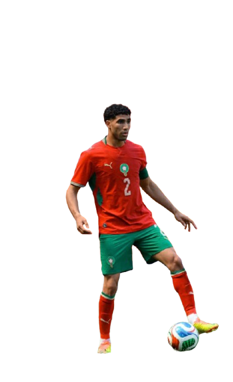
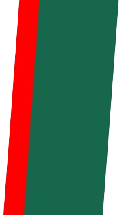

La Selección de Marruecos (Los Leones del Atlas) representa al país desde 1957 y es una de las selecciones más importantes del fútbol africano. A lo largo de su historia ha participado en varias Copas del Mundo, creciendo poco a poco en el escenario internacional y consolidándose como un equipo competitivo. Su evolución más destacada se dio en las últimas décadas, donde pasó de ser una selección emergente a una de las más respetadas de África y con presencia constante en torneos internacionales.

Semifinalista del Mundial Catar 2022
Primer equipo africano en pasar a octavos
Campeón de la Copa Africana de Naciones
De los Leones del Atlas al escenario mundial: Marruecos hizo historia y quiere seguir soñando.